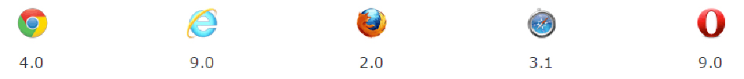

<canvas id="example" width="150" height="150">
</canvas>
The element has only two attributes, width and height.
These are both optional.
The default size of the canvas is
300 pixels × 150 pixels (width × height).
But custom sizes can be defined using the HTML
height and width property.
The element can be styled just like any
normal image (margin, border, background…).
These rules, however, don't affect the actual
drawing on the canvas.
<canvas id="example" width="150" height="150">
current stock price: $3.15 +0.15
</canvas>
<canvas id="alt" width="150" height="150">
<img src="images/clock.png" width="150" height="150" alt=""/>
</canvas>
The element may not be defined as earlier versions
of Internet Explorer, such as version 9 or text browsers.
In this case, it is worth using the alternative content in the .
If the browser does not work with the canvas, then there will be no empty space on the page.
const canvas = document.getElementById('example');
if (canvas.getContext) {
var ctx = canvas.getContext('2d');
// drawing code here
} else {
// canvas-unsupported code here
}
The canvas is initially blank.
To display something, a script first needs to access the rendering
context and draw on it.
The element has a method called getContext(),
used to obtain the rendering context and its drawing functions.
getContext() takes one parameter, the type of context.
Code Example
<style type="text/css">
canvas { border: 1px solid black; }
</style>
<body onload="draw();">
<canvas id="example" width="400" height="400"></canvas>
</body>
<script type="text/javascript">
function draw() {
const canvas = document.getElementById("example");
if (canvas.getContext) {
let ctx = canvas.getContext("2d");
ctx.fillStyle = "rgb(200,0,0)";
ctx.fillRect (10, 10, 55, 50);
ctx.fillStyle = "rgba(0, 0, 200, 0.5)";
tx.fillRect (30, 30, 55, 50);
}
}
</script>
The script includes a function called draw(),
which is executed once the page finishes loading.
Result
You can see on the canvas — a box surrounded by a black square — appeared
two squares of the color set by the fillStyle function.
Drawing squares makes fillRect ().
The grid
Figures in functions brackets - coordinates on the Canvas grid.
The starting point is the upper left corner.
Normally 1 unit in the grid corresponds to 1 pixel on the canvas.
Drawing shapes with canvas
only supports one primitive shape: rectangles.
All other shapes must be created by combining one or more paths,
lists of points connected by lines. Luckily, we have an assortment of path
drawing functions which make it possible to compose very complex shapes.
The rectangle
fillRect(x, y, width, height)
Draws a filled rectangle.
strokeRect(x, y, width, height)
Draws a rectangular outline.
clearRect(x, y, width, height)
Clears the specified rectangular area, making it fully transparent.
First let's look at the rectangle.
1. fillRect(x, y, width, height)
Draws a filled rectangle.
2. strokeRect(x, y, width, height)
Draws a rectangular outline.
3. clearRect(x, y, width, height)
Clears the specified rectangular area, making it fully transparent.
Code Example
<script type="text/javascript">
function draw() {
const canvas = document.getElementById("example");
if (canvas.getContext) {
let ctx = canvas.getContext("2d");
ctx.fillRect(25, 25, 100, 100);
ctx.clearRect(45, 45, 60, 60);
ctx.strokeRect(50, 50, 50, 50);
}
}
</script>
Result

The fillRect() function draws a large black square 100 pixels on each side.
The clearRect() function then erases a 60x60 pixel square from the center,
and then strokeRect() is called to create a rectangular outline 50x50 pixels within the cleared square.
Unlike the path functions we'll see in the next section,
all three rectangle functions draw immediately to the canvas.
Drawing paths.
A path is a list of points, connected by segments of lines
that can be of different shapes, curved or not, of different width and of different color.
To make shapes using paths takes steps:
You create the path
Then you use drawing commands to draw into the path
Once the path has been created, you can stroke or fill the path to render it
To make shapes using paths takes some steps:
1. You create the path.
2. Then you use drawing commands to draw into the path.
3. Once the path has been created, you can stroke or fill the path to render it.
Here are the functions used to perform these steps:
beginPath()
Creates a new path
Path methods
Methods to set different paths for objects
Here are the functions used to perform these steps:
1.beginPath()
Creates a new path.
Once created, future drawing commands are directed into the path
and used to build the path up.
2. Path methods
Methods to set different paths for objects.
closePath()*
Adds a straight line to the path,
going to the start of the current sub-path
stroke()
Draws the shape by stroking its outline
fill()
Draws a solid shape by filling the path's content area
3. * closePath()
Adds a straight line to the path,
going to the start of the current sub-path.
4. stroke()
Draws the shape by stroking its outline.
5. fill()
Draws a solid shape by filling the path's content area.
Drawing a triangle
<script type="text/javascript">
function draw() {
const canvas = document.getElementById("example");
if (canvas.getContext) {
ctx.beginPath();
ctx.moveTo(75,50);
ctx.lineTo(100,75);
ctx.lineTo(100,25);
ctx.fill();
}
}
</script>
Result
Moving the pen
moveTo(x, y)
Moves the pen to the coordinates specified by x and y.
One very useful function, which doesn't
actually draw anything but becomes part of the path
list described above, is the moveTo() function.
Example
function draw() {
const canvas = document.getElementById('canvas');
if (canvas.getContext) {
let ctx = canvas.getContext('2d');
ctx.beginPath();
ctx.arc(75, 75, 50, 0, Math.PI * 2, true); // Outer circle
ctx.moveTo(110, 75);
ctx.arc(75, 75, 35, 0, Math.PI, false); // Mouth (clockwise)
ctx.moveTo(65, 65);
ctx.arc(60, 65, 5, 0, Math.PI * 2, true); // Left eye
ctx.moveTo(95, 65);
ctx.arc(90, 65, 5, 0, Math.PI * 2, true); // Right eye
ctx.stroke();
}
}
Smile
Line
lineTo(x, y)
Draws a line from the current drawing position to the position specified by x and y.
Draws a line from the current drawing position to the position specified
by x and y.
Arcs
arc(x, y, radius, startAngle, endAngle, anticlockwise)
Draws an arc which is centered at (x, y) position with radius r starting at startAngle
and ending at endAngle going in
the given direction indicated by anticlockwise (defaulting to clockwise).
arcTo(x1, y1, x2, y2, radius)
Draws an arc with the given control points and radius,
connected to the previous point by a straight line.
1. arc(x, y, radius, startAngle, endAngle, anticlockwise)
Draws an arc which is centered at (x, y) position with radius r
starting at startAngle and ending at endAngle going in
the given direction indicated by anticlockwise (defaulting to clockwise).
2. arcTo(x1, y1, x2, y2, radius)
Draws an arc with the given control points and radius,
connected to the previous point by a straight line.
Example
function draw() {
/code/
for (let i=0; i<4; i++){
for(let j=0; j<3; j++){
ctx.beginPath();
let x = 25+j*50, y = 25+i*50; // x y coordinate
let radius = 20; // Arc radius
let startAngle = 0; // Starting point on circle
let endAngle = Math.PI+(Math.PI*j)/2; // End point on circle
let anticlockwise = i%2==0 ? false : true;
// clockwise or anticlockwise
ctx.arc(x, y, radius, startAngle, endAngle, anticlockwise);
if (i>1) ctx.fill();
else ctx.stroke();} } }It draws 12 different arcs all with different angles and fills.
The two for loops are for looping through the rows and columns of arcs.
For each arc, we start a new path by calling beginPath().
Clockwise
Bezier and quadratic curves
Quadratic Bezier curves
Cubic Bezier curves
Rectangles
Some more drawing functions
Transformations
With transformations there are more powerful ways to
translate the origin to a different position,
rotate the grid and even scale it.
Saving and restoring state
save()
Saves the entire state of the canvas.
restore()
Restores the most recently saved canvas state.
1. save()
Saves the entire state of the canvas.
2. restore()
Restores the most recently saved canvas state.
Canvas states are stored on a stack.
Every time the save() method is called,
the current drawing state is pushed onto the stack.
A drawing state consists of:
The transformations that have been applied (i.e. translate, rotate and scale – see below).
The current values of the following attributes.
The current clipping path, which we'll see in the next section.
A drawing state consists of:
1. The transformations that have been applied
(i.e. translate, rotate and scale – see below).
2. The current values of the following attributes.
3. The current clipping path, which we'll see in the next section.
ctx.fillRect(0, 0, 150, 150);
// Draw a rectangle with default settings
ctx.save(); // Save the default state
ctx.fillStyle = '#09F'; // Make changes to the settings
ctx.fillRect(15, 15, 120, 120);
// Draw a rectangle with new settings
ctx.save(); // Save the current state
ctx.fillStyle = '#FFF'; // Make changes to the settings
ctx.globalAlpha = 0.5;
ctx.fillRect(30, 30, 90, 90);
// Draw a rectangle with new settings
ctx.restore(); // Restore previous state
ctx.fillRect(45, 45, 60, 60);
// Draw a rectangle with restored settings
ctx.restore(); // Restore original state
ctx.fillRect(60, 60, 30, 30);
// Draw a rectangle with restored settings
The first step is to draw a large rectangle with the default settings.
Next we save this state and make changes to the fill color.
We then draw the second and smaller blue rectangle and save the state.
Again we change some drawing settings and draw the third semi-transparent white rectangle.
However once we call the first restore() statement, the top drawing state is removed from the stack,
and settings are restored.
When the second restore() statement is called,
the original state (the one we set up before the first call to save)
is restored and the last rectangle is once again drawn in black.
Clockwise
Translating
Rotating
Scaling
Transforms